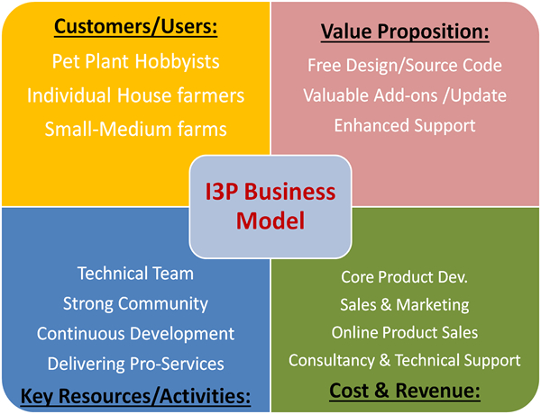

The goal of this assignment is to define a strategy for the dissemination of our final project. “How would you scale the production of your final project beyond producing one of them. Are you going to sell it? Are you going to license it? Is it a business, a product or a service?”
My final project I3P consists of four parts.
• 3D Deisgn
• Electronic hardware
• Electronic programming
• GUI application
The project will be digitally available for free globally after Fab Academy hosted in github.
The project is Open Source Hardware and Software licensed under MIT license. The selection of MIT license because is simpler and shorter than other licenses. The three key points of the license are:
1: the project is delivered "as is" with no warranty or responsibility whatsoever.
2: do whatever you want with the code.
3: give attribution.
You can download the I3P project license here.
This final output of the I3P project is only the starting point for a future development following my personal interest and some stakeholders special request to continue working on it. The future activities will be as follow:
• Further development will take place at the newly founded Brindisi Fablab to which I’m collaborating actively
• Development activities will cover:
o Other sensors: light and PH
o Other hardware: water pump, lump, wireless communication, solar panel
o Computer application with database of plants, features per plant, history of my plants, and monitor multiple plants
o Mobile app for monitoring and managing own plants.
Right now no company will be created. I will reserve the right to create a legal entity once I establish the market, develop the commercial solution, and find first customers willing to pay for my product.
I think that I will have three main revenue streams:
1. Home farming kits: sold over internet and through a selection of specialized shops
2. Small-medium farming solutions: customized projects for local farms and agricultures
3. Consultancy and technical support and customization of hardware and/or software
I decided to go through two options:
1. Apply for funding by Italian and European funds encouraging projects based on digital fabrication
2. Crowd-funding once I develop a nice and working first prototype, and defined the required financing funds

WHY? Timely and effective dissemination of results is an essential part of the project. This ensures that the gained knowledge or exploitable foreground can benefit the whole community and society, and that any duplication of research and development activities is avoided. Further, this can allow potential users or future developers to know about the state of the art of the actual findings, and decide to user as-is or to build upon and further develop the findings (even for eventual commercial pathways, dissemination will create knowledge, stimulate needs and trigger demand).
TO WHOM? The dissemination of results will target towards the students, makers, and overall scientific community and industry. However it might be a benefit to look outside the box as there are plenty of others who might be interested in what my project is doing, such as the media, funders and the general public.
HOW? In addition to the traditional means of dissemination such as workshops and seminars, I plan to consider and implement the following dissemination actions:
• The project's WEBSITE should be updated regularly and it should contain complete information about the project, documentation, public deliverables, and relevant events
• A project BLOG as a good way for keeping both active members as well as other interest users on the evolving of the project activities and findings
• More interactive communication will be pursued via SOCIAL MEDIA through personal and dedicated accounts